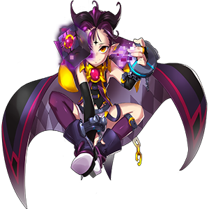

|
Veigas Terr
|
|
|
|
Informações Básicas
|
|
Raça
|
Asmodiano(Ancião)
|
|
Gênero
|
Masculino
|
|
Idade
|
Desconhecida
|
|
Classe
|
|
Destruidor
|
|

|
|
|
Veigas Terr é o líder da família Terr,
núcleo das famílias radicais, e foi um
dos que enviou seus exércitos à Primeira
Guerra Mágica de Elyos contra Ernas e
apesar de ser muito velho para os padrões
humanos, em Elyos ele é considerado um
jovem e verdadeiro prodígio, já que até
onde se sabe, foi escolhido pelo próprio
Criador para destruir outras dimensões.
|
|
|
Com seus planos frustrados
em relação a destruir Calnat, Veigas se
irritou profundamente e resolveu ir atrás
de Dio, o líder da família Burning Canyon,
núcleo do grupo moderador, que estava em
Ernas, e destruir o asmodiano e a dimensão
dos humanos com as suas próprias mãos. Ao
sair de Elyos pela ponte dos mundos, Trivia,
Veigas foi desafiado por um dos monstros
devoradores de almas, que mencionou que
ele não conseguiria ter sua vingança contra
Dio, pois os Doze Discípulos entrariam em seu
caminho exatamente como fizeram com Astaroth.
|
|
|
|
Contudo, a profecia
veio invertida do mundo dos demônios.
Apesar dos avisos da Amy, que relatavam
a verdade sobre a profecia, a equipe da
Grand Chase não deu ouvidos à escolhida
pelos deuses. Isso porque um guerreiro
mágico trouxe a mensagem de que o traidor
seria aquele capaz de receber oráculos,
mensagens divinas. E assim teve início à
profecia, trazendo de volta uma das maiores
vilãs que a Grand Chase já enfrentou: Cazeaje.
|
|